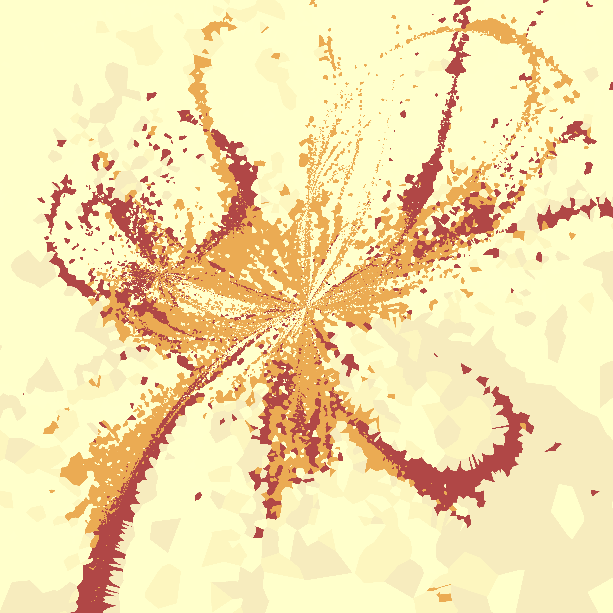

![]()
A little while ago I was invited by Sara Mortara to contribute art as part of an exhibit to be presented at the 2021 useR! conference, along with several artists who I admire greatly. I could hardly say no to that, now could I? So I sent some pieces that I’m fond of, most of which are posted somewhere on my art website. I realised later though that I was going to have to talk a little about my art too, and Sara suggested an informal Q&A during the timeslot allocated to the exhibit. Naturally, I agreed since that meant I didn’t have to prepare anything formal, and like all artists I am extremely lazy. Later though, it occurred to me that it actually wouldn’t be terrible if I wrote a blog post to accompany my contribution to the exhibit, loosely based on the questions Sara suggested. And so here we are…
When did you start using R for art? Do you remember your first piece?
I started making art in R some time in late 2019. I’d discovered some of the art that Thomas Lin Pedersen had been making – at the time he was posting pieces from his Genesis series – and at the same time I found the ambient package that he was using to create the pieces. Thomas famously does not post source code for his art, and being stubborn and curious I wanted to work out how he was doing it, so I started playing with ambient to see if I could reverse engineer his system. My very first piece was Constellations, shown below. It’s certainly not the prettiest thing I’ve created, and there are a lot of things I’d like to change about it now, but it’s nice to have your early work lying around to see how you’ve changed since then:
Constellations
If you follow the link above and look at Thomas’ Genesis pieces you can tell that it’s not even remotely close to the mark, but I did eventually get the hang of it and managed to produce a few pieces like Rainbow Prisms which are closer to the kind of work he was producing:

Rainbow Prisms
It’s still not quite the same as Thomas’ in style, but by the time I’d worked out how to produce these I decided it was time to change my approach and branch out a bit. I love Thomas’ work of course, but I didn’t want my art to be just a low quality imitation of his! And besides, by that point I’d started discovering a whole lot of other people making generative art in R, such as Will Chase, Antonio Sánchez Chinchón, Marcus Volz, and (somewhat later) Ijeamaka Anyene. Each has their own style and – following the famous advice that art is theft – have shamelessly taken ideas and inspiration from each at different times.
Some of those early pieces are still around, as part of the Rosemary gallery.
Were you an artist before making generative art in R?
Not really. I always wanted to do more artistic and creative things, but the only thing I’d ever done that required any kind of mix of aesthetic sensibility and craftwork was gardening. I used to have a lovely garden in Adelaide with a mix of Mediterranean and Australian native plants, and I had the same kind of enthusiasm for gardening then as I do for art now. Maybe one day I’ll garden again but there’s no space for that in my Sydney apartment!
Can you talk about your creative process? Do you begin from code or from the outcome you are looking for? Do you start with the color palette in mind, or is it an iterative process?
I’m honestly not sure I have a consistent process? I spend a lot of time browsing artwork by other people on twitter and instagram, and from time to time I read posts about the techniques that they use. Whenever I do this I end up thinking a bit about how I might use this technique or wondering what methods other artists use to create their work, but I don’t usually act on that information until I think of something I want to do with it. That kind of technical or stylistic information is like background knowledge that lies dormant until I need it.
Most of the time the starting point for my art is an emotion. I might be angry or lonely or tired, or just in need of something to occupy my mind and distract me from something else. When I start implementing a new system it’s often (though not always) a modification of a previous one. In principle this modification process could go in any direction, but my aesthetic sensibilities depend a lot on my state of mind, and that imposes a bias. I tweak the code one way, and see what it produces. If I like it, I keep the change, if I don’t I reject it. It’s a lot like a Metropolis-Hastings sampler that way, but my mood strongly shapes the accept/reject decision, so the same starting point can lead to different outcomes. As a concrete example, the Pollen, Bursts and Embers series are all based on the same underlying engine, the fractal flame algorithm created by Scott Draves, but my emotional state was very different at the time I coded each version. For example, the Pollen Cloud piece I contributed to the useR exhibit is soft and gentle largely because I was feeling peaceful and relaxed at the time:

Pollen Cloud
By way of contrast, the Geometry in a Hurricane piece from Bursts is layered in jagged textures with a chaotic energy because I was angry at the time I was coding:

Geometry in a Hurricane
The Soft Ember piece below (also included in the exhibit) has a different feel again. There’s more energy to it than the pollen pieces, but it’s not as chaotic as the bursts series. Again, that’s very much a reflection of my mood. I wasn’t angry when I coded this system, but I wasn’t relaxed either. At the time, something exciting had happened in my life that I wasn’t quite able to do anything about, but I was indulging in the anticipation of a new thing, and some of that emotion ended up showing through in the pieces that I made at the time:
Soft Ember
To bring all this back to the question, it’s very much an iterative process. The driver behind the process is usually an emotion, and the colour choices, the shapes, and the code are all adapted on the fly to meet with how I’m feeling.
What is your inspiration?
To the extent that my art is driven by emotion, the inspiration for it tends to be tied to sources of strong emotion in my life. Sometimes that emotion comes from the sources of love and joy: family, intimate partners, and so on. The Heartbleed series is one of those. The background texture to these images is generated by simulating a simple Turing machine known as a turmite and the swirly hearts in the foreground are generated using the toolkit provided by the ambient package. This system is very much motivated from emotional responses to the loved ones in my life. One of the pieces in the exhibit is from this series:

Turmite 59 in Red
Other times the emotional motivation comes from sources of pain - sometimes things that were physically painful, sometimes that were psychologically painful. The Orchid Thorn piece I included in the exhibit is one of those, linked to an intense physically painful experience.

Orchid Thorn
The Bitterness piece below, which I haven’t done much with other than post to my instagram, is strongly tied to the psychological stresses associated with my gender transition. Yes, there’s a softness to the piece, but there’s also a sandpaper-like texture there that makes me think of abrasion. The colour shifts make me think about transitions, but the roughness at some of the boundaries reminds me that change is often painful.

Bitterness
One odd property of the art, at least from my point of view, is that looking at a given piece recalls to mind the events and emotions that inspired the work, and to some extent that recollection becomes a way of re-experiencing the events. Sometimes that’s a good thing. Not always though.
What is your advice for people who wants to create art in R?
I think I’d suggest three things. Find artists you like, read about their processes. Sometimes they’ll show source code or link to algorithms like I’ve done in a few places in this piece, and it can be really valuable to try to retrace their steps. There’s nothing wrong with learning technique by initially copying other artists and then developing your own style as you go.
The second thing I’d suggest, for R folks specifically, is to take advantage of the skills you already have. Most of us have skills in simulation, data wrangling, and data visualisation, and those skills can be repurposed for artistic work quite easily. A lot of my pieces are created using that specific combination. I’ll often define a stochastic process and sample data from it using tools in base R, use dplyr to transform and manipulate it, then use ggplot2 to map the data structure onto a visualisation. One of the nice things about dplyr and ggplot2 being compositional grammars is the fact that you can “reuse” their parts for different purposes. I get a lot of artistic mileage out of geom_point() and geom_polygon(), and quite frankly purrr is an absolute godsend when the generative process you’re working with is iterative in nature.
The other thing would be try not to put pressure on yourself to be good at it immediately. I wasn’t, and I don’t think anyone else was either. Earlier I showed the Constellations piece and referred to it as the first piece I created. In a way that’s true, because it was the first time I reached a level that I felt comfortable showing to other people. But I made a lot of junk before that, and I made a lot of junk after that. I make some good art now (or so people tell me) precisely because I made a lot of bad art before. Even now, though, I can’t tell which systems will end up good and which will end up bad. It’s a bit of a lottery, and I’m trying my best not to worry too much about how the lottery works. I like to have fun playing with visual tools, and sometimes the tinkering takes me interesting places.
Anything to add about your pieces in the exhibit?
Not a lot. Several of the pieces I’ve contributed are already linked above, but I might just say a little about the other pieces and how they were made. The Silhouette in Teal piece uses the flametree generative art package to create the tree shown in silhouette in the foreground, and a simple random walk to generate the texture in the background:

Silhouette in Teal
It has also been surprisingly popular on my Society6 store, which you can visit if you want some of my art on random objects. I am not sure why, but I have sold a lot more shower curtains and yoga mats than I would have expected to sell in my lifetime.
Leviathan emerged from my first attempt to create simulated watercolours in R using this guide written by Tyler Hobbs. I was in a dark mood at the time and the ominous mood to the piece seems quite fitting to me.

Leviathan
The Floral Effect piece is an odd one. It’s part of the Viewports series that I created by applying Thomas Lin Pedersen’s ggfx package over the top of the output of the same system I used to create the Native Flora series, which in turn is an application of the flametree system I mentioned earlier. I quite like it when these systems build on top of one another.

Floral Effect
The last piece I included, Fire and Ice, is a little different from the others in that it’s not a “pure” generative system. It works by reading an image file into R, using Chris Marcum’s halftoner package to convert it to a halftone image, and then manipulate that image using the tools provided in the ambient package. The end result is something that still resembles the original image but has more of a painted feel:

Fire and Ice
Last updated
2022-08-23 13:12:01 AEST
Details
Reuse
Citation
BibTeX citation:
@online{navarro2021,
author = {Danielle Navarro},
title = {Generative Art in {R}},
date = {2021-07-08},
url = {https://blog.djnavarro.net/generative-art-in-r},
langid = {en}
}
For attribution, please cite this work as: